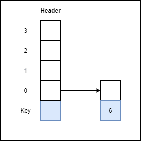
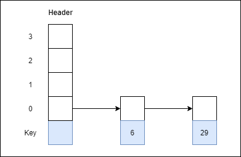
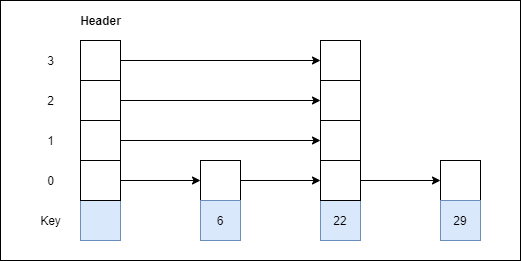
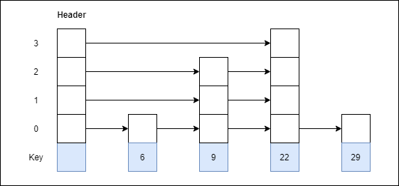
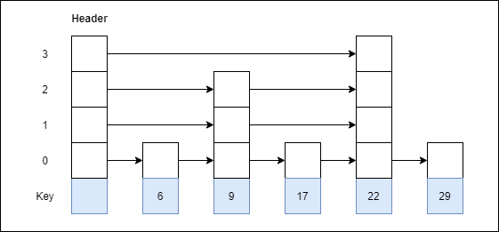
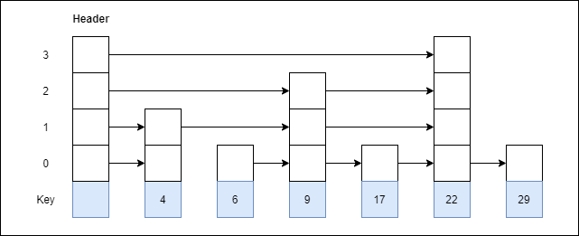

Skip list in Data structure
What is a skip list?
A skip list is a probabilistic data structure. The skip list is used to store a sorted list of elements
or data with a linked list. It allows the process of the elements or data to view efficiently. In one
single step, it skips several elements of the entire list, which is why it is known as a skip list.
The skip list is an extended version of the linked list. It allows the user to search, remove, and
insert the element very quickly. It consists of a base list that includes a set of elements which
maintains the link hierarchy of the subsequent elements.
Complexity table of the Skip list
| S. No |
Complexity |
Average case |
Worst case |
| 1. |
Access complexity |
O(logn) |
O(n) |
| 2. |
Search complexity |
O(logn) |
O(n) |
| 3. |
Delete complexity |
O(logn) |
O(n) |
| 4. |
Insert complexity |
O(logn) |
O(n) |
| 5. |
Space complexity |
- |
O(nlogn) |
Skip List Basic Operations
- Insertion operation: It is used to add a new node to a particular location in a specific
situation.
- Deletion operation: It is used to delete a node in a specific situation.
- Search Operation: The search operation is used to search a particular node in a skip
list.
Algorithm of the insertion operation
Insertion (L, Key)
local update [0...Max_Level + 1]
a = L → header
for i = L → level down to 0 do.
while a → forward[i] → key forward[i]
update[i] = a
a = a → forward[0]
lvl = random_Level()
if lvl > L → level then
for i = L → level + 1 to lvl do
update[i] = L → header
L → level = lvl
a = makeNode(lvl, Key, value)
for i = 0 to level do
a → forward[i] = update[i] → forward[i]
update[i] → forward[i] = a
Algorithm of deletion operation
Deletion (L, Key)
local update [0... Max_Level + 1]
a = L → header
for i = L → level down to 0 do.
while a → forward[i] → key forward[i]
update[i] = a
a = a → forward[0]
if a → key = Key then
for i = 0 to L → level do
if update[i] → forward[i] ? a then break
update[i] → forward[i] = a → forward[i]
free(a)
while L → level > 0 and L → header → forward[L → level] = NIL do
L → level = L → level - 1
Algorithm of searching operation
Searching (L, SKey)
a = L → header
loop invariant: a → key level down to 0 do.
while a → forward[i] → key forward[i]
a = a → forward[0]
if a → key = SKey then return a → value
else return failure
Example 1: Create a skip list, we want to insert these following keys in the empty skip
list.
- 1.6 with level 1.
- 2.29 with level 1.
- 3.22 with level 4.
- 4.9 with level 3.
- 5. 17 with level 1.
- 6.4 with level 2.
Ans:
Step 1: Insert 6 with level

Step 2: 29 with level 1

Step 3: Insert 22 with level 4

Step 4: Insert 9 with level 3

Step 5: Insert 17 with level 1

Step 6: Insert 4 with level 2

Advantages of the Skip list
- 1.If you want to insert a new node in the skip list, then it will insert the node very fast because there are no rotations in the skip list.
- 2.The skip list is simple to implement as compared to the hash table and the binary search tree.
- 3.It is very simple to find a node in the list because it stores the nodes in sorted form.
- 4.The skip list algorithm can be modified very easily in a more specific structure, such as indexable skip lists, trees, or priority queues.
- The skip list is a robust and reliable list.
Disadvantages of the Skip list
- 1.It requires more memory than the balanced tree.
- 2.Reverse searching is not allowed.
- 3.The skip list searches the node much slower than the linked list.
Applications of the Skip list
- 1.It is used in distributed applications, and it represents the pointers and system in the distributed applications.
- 2.It is used to implement a dynamic elastic concurrent queue with low lock contention.
- 3.It is also used with the QMap template class.
- 4.The indexing of the skip list is used in running median problems.
- 5.The skip list is used for the delta-encoding posting in the Lucene search.